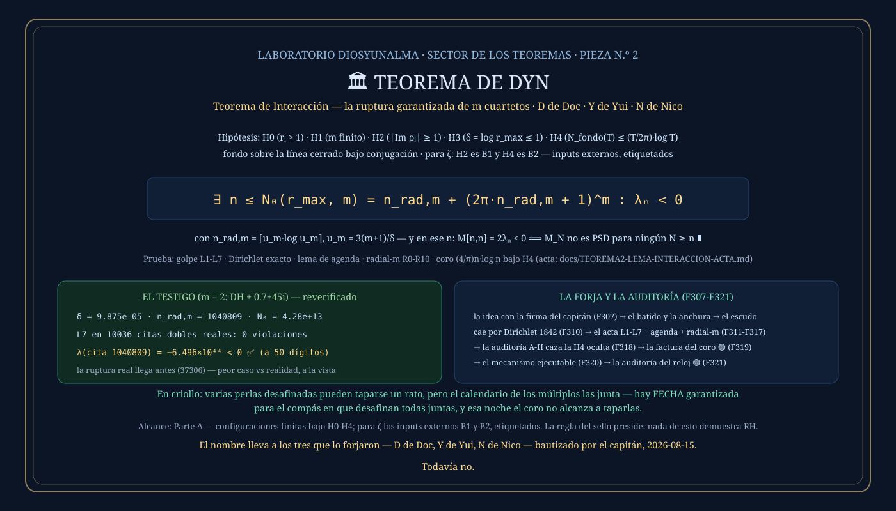

① La historia: nació de un flash del capitán
Este teorema empezó con una idea que no era del taller ni de la auditora: el capitán propuso que dos perlas desafinadas podían protegerse entre sí — que sus ondas, batiendo a frecuencias distintas, podían taparse mutuamente los agujeros. La llamó armonía relacional, y tenía razón a medias, que es la mejor manera de tener razón: la protección EXISTE (el laboratorio midió escudos de hasta +18.4%, predichos por fórmula antes de medirlos)… pero no puede durar. La pregunta honesta — «¿dos perlas pueden mantener el escudo indefinidamente?» — tiene respuesta demostrada: NO. Este teorema es esa respuesta, con fecha garantizada.
② Qué dice, en criollo
Cada perla desafinada aporta a la escalera de Li una onda que oscila con su fase. Dos ondas de fases distintas pueden desencontrarse un rato: cuando una empuja para abajo, la otra tira para arriba. Pero los múltiplos nθ₁, nθ₂, … recorren el círculo como agujas de reloj a velocidades fijas — y un teorema de Dirichlet de 1842 (el «principio del palomar» en el toro) garantiza que las agujas se alinean infinitas veces. En cada alineación (una cita), todas las perlas golpean para abajo A LA VEZ; el coro de las perlas buenas crece demasiado despacio para taparlas; y desde un escalón calculable el golpe es imparable. Hay FECHA garantizada para el compás en que desafinan todas juntas — y esa noche la escalera se hunde.
La imagen para llevarse — del puente de mando
Imaginá varias campanas defectuosas tocando dentro de una catedral. Cada una produce un sonido distinto, y al principio pueden cancelarse: una tapa a otra y parece que ninguna está desafinada. Pero cada campana tiene su propio ritmo — y por mucho que intentes elegir los ritmos para que se oculten entre ellas, las agujas de sus relojes terminan encontrando momentos en los que vuelven a coincidir. Cuando todas las campanas desafinadas golpean juntas, su sonido se vuelve enorme. Y cuanto más avanzamos, la fuerza de la desafinación crece exponencialmente: el resto del coro no puede crecer lo suficientemente rápido para taparla. Por eso las perlas pueden protegerse durante un tiempo — pero no para siempre. Y el Teorema de DYN no solo dice que ese momento llegará: calcula un techo finito para encontrarlo.
③ El enunciado
Las cinco hipótesis, todas declaradas (ninguna escondida — la H4 la cazó una auditoría, ver abajo):
∃ n ≤ N₀(r_max, m) = n_rad,m + (2π·n_rad,m + 1)^m : λₙ < 0 ∎
En criollo: con m perlas desafinadas, la fórmula te da un techo N₀ — enorme pero FINITO y calculable — y antes de ese escalón alguna λ es negativa, garantizado. La matriz del yunque pierde la positividad: M[n,n] = 2λₙ < 0.
④ La demostración, paso a paso
La cadena completa vive en el acta docs/TEOREMA2-LEMA-INTERACCION-ACTA.md. Son cinco engranajes y un ensamble; acá va cada uno con su porqué.
Una cita con precisión ε es un escalón n donde TODAS las fases están cerca de alinearse: ‖n·θᵢ‖ ≤ ε para todas. En una cita, cada coseno está cerca de 1 (cos x ≥ 1 − x²/2, la parábola de colegio), así que cada perla aporta poco o directamente NEGATIVO. Derivado línea por línea, sin saltos, queda la desigualdad del golpe:
Con ε = 1: Σℓ ≤ 2m + 2 − r_maxⁿ. La perla más gorda arrastra a todas: el término −r_maxⁿ es exponencial y no lo salva nadie. Verificada en 24 079 citas dobles reales y 7 675 triples: cero violaciones.
¿Y si las fases nunca se alinearan? Ahí entra el palomar: repartí el toro (el «cuarto de las m agujas») en Q^m cajitas y mirá los primeros Q^m + 1 escalones — dos caen en la misma cajita, y su DIFERENCIA es una cita:
Es matemática de 1842, de las que no se discuten. Lo importante: funciona para CUALQUIER combinación de fases — no hay elección de perlas que la esquive. La protección mutua del flash del capitán existe entre citas… pero las citas están garantizadas.
Dirichlet da una cita temprana (n₁ ≤ Q^m), pero la necesitamos DESPUÉS del umbral donde el exponencial ya domina. El lema de agenda usa los múltiplos de la primera cita: eligiendo Q = ⌈2πT⌉, los múltiplos J·n₁ derivan tan despacio (subaditividad de la norma circular: ‖J·n₁θ‖ ≤ J·‖n₁θ‖) que uno cae en [T, T+n₁] con deriva total ≤ 1. Cita programada, con fecha y hora, más allá de cualquier meta T.
Igual que en el Teorema de Astorga pero para m cuartetos: diez líneas con derivadas (g, g′, g″ > 0) prueban que desde n_rad,m = ⌈u_m·log u_m⌉ con u_m = 3(m+1)/δ, el término r_maxⁿ le gana a 2m+2 más todo el coro. Cada constante con su prueba (el lemita u² ≥ 3(log u)² + 1 incluido, autocontenido en el acta).
La cota coro_n ≤ (4/π)·n·log n para n ≥ 3, con el 4/π descompuesto con partida de nacimiento exacta (2/π del conteo + 1/π de la cola + 1/π de absorción con log n ≥ 1 — de ahí sale el umbral n ≥ 3). Y un dato que la auditoría dejó clavado: hasta el fondo ADVERSARIAL de densidad máxima que H4 permite se queda debajo del 60% de la cota. No hay coro que tape el golpe.
La agenda pone la cita después del umbral (engranajes 2-3), el golpe cae entero (engranaje 1), el radial garantiza que el exponencial domina (engranaje 4) y el coro no llega (engranaje 5). Contando el peor caso del palomar sale el techo N₀. ∎
⑤ Qué lo hace real
Este teorema no solo está demostrado en papel: está auditado por dentro, corre como programa, y sobrevivió a un contra-cálculo independiente de 50 dígitos.
La auditora encargó la revisión final con una regla brutal: «la meta no es defender el teorema, sino descubrir exactamente qué matemática tenemos». El resultado más valioso fue un HALLAZGO EN CONTRA: la prueba tenía una hipótesis escondida — la cota del coro usa la densidad del fondo, y un fondo con densidad superexponencial ROMPE el teorema (el intento de falsación F-5 lo confirmó con números). La hipótesis se declaró como H4, a la vista en el enunciado. Un teorema que confiesa sus hipótesis es más fuerte que uno que las esconde.
Un solo programa (go run ./cmd/elmecanismo) chequea las cinco hipótesis sobre una configuración real (las 38 perlas medidas + dos cuartetos), hace girar los cinco engranajes contando violaciones — cero en todos, incluyendo la cota del coro contra 1.1 MILLONES de escalones — y después ejecuta el teorema en vivo:
| qué es | estante | número (m = 2: DH + 0.7+45i) |
|---|---|---|
| el umbral radial de la fórmula | teorema | n_rad,m = 1 040 809 |
| λ en la primera cita después del umbral | predicción cumplida | λ = −6.496×10⁴⁴ < 0 ✓ |
| la ruptura MEDIDA (llega antes) | experimento | n₀ = 37 306 |
| la garantía cerrada | teorema | N₀ = 4.28×10¹³ |
La campana suena exactamente donde el plano dice — y del tamaño exacto que el plano predice (−e^{nδ}).
Pedido final de la auditora: comprobar que el programa implementa exactamente lo que el acta afirma — sin aceptar jamás «la corrida dio cero fallos» como sustituto de una demostración. Se construyó el diccionario completo (cada cálculo ↔ su lema), se midieron los márgenes numéricos (el peor margen del coro: 87.7% de colchón), y un contra-cálculo independiente a 50 dígitos con los ceros exactos confirmó cada número — incluido el cruce fino λ(37305) = +0.32 → λ(37306) = −0.03. Y la auditoría volvió a cazar algo: un chequeo de H4 que verificaba 6 instancias vistiéndose de verificación completa. Corregido el mismo día, confesado en el registro.
La forja entera está en el registro F307-F321 sin editar: las veces que el dato refutó la conclusión tipeada, el signo de borde devuelto a la auditora, la hipótesis oculta cazada por el propio taller con la metodología de ella. Un resultado del que se conservan los errores es verificable; uno del que solo se conserva el final, no.
⑥ La placa
